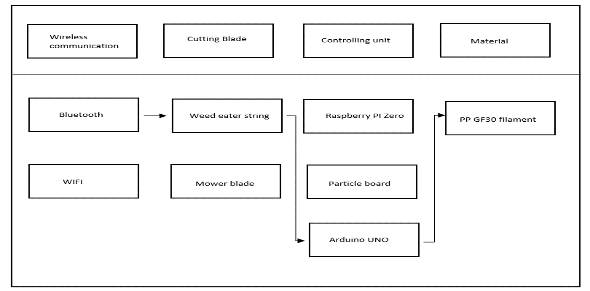
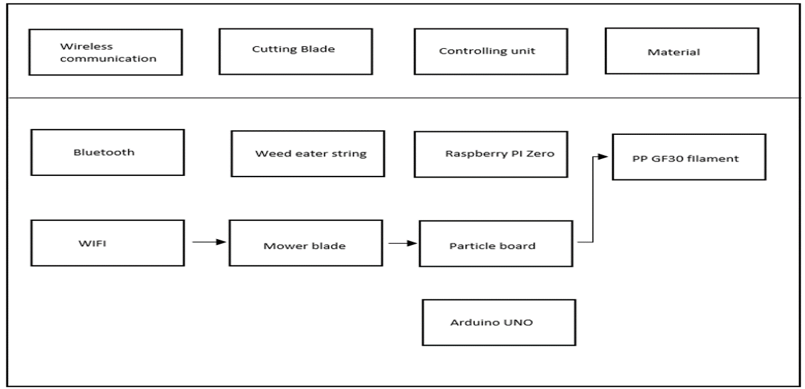
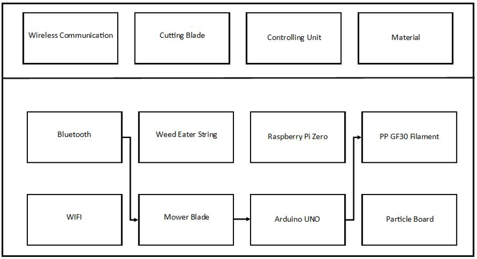

Introduction
{kind=link}
• This project is about a robotic lawnmower which is designed to cut grass automatically.
• The objective of this project is to make lawn maintenance easier for the next owner.
• A web application is used to control the mower, including starting and stopping it, and programming a mowing schedule.
• The mower is powered by a rechargeable battery, and it has a mower blade that can be changed easily once worn.
• The owner will input the area to be mowed, and the mower will mow based on the dimensions provided by the owner.
Project Summary
I.SUMMARIZED PROBLEM STATEMENT
Lawn care is something that most people have a challenge with maintaining. It’s something people don’t know how to do, have the physical capability to do, or the financial capability. Having an ill maintained lawn can come with its challenges such a lower property valuation or possible fines. People in these situations eventually give up on their lawns and end up destroying the beauty of their properties.
A.Objectives
The primary goals of this object would be:
1. Real time mapping and obstacle detection.
2. Settings control via app and able to collect and display data using various sensors.
3. Most importantly, able to cut grass in desired length, patterns, and location user has selected using app.
B. Constraints
Main constraints for this project would be:
1. Sensors such as lidar should accurately be able to detect obstacle to make map.
2. Sensors and device should be durable to withstand outdoor conditions.
3. Must be able to navigate through outdoor conditions
II. CONCEPT DEVELOPMENT
A.Concept
Initially, the robot would have to use lidar sensors and a well programmed algorithm to detect obstacles and come up with a map of the lawn. The generated map can then be displayed on a App on which users are able to configure the robot’s settings, such as the length the grass is needed to be cut at or any patterns and areas of the lawn that’s needed to be cut. The robot itself would have a circular disk like design with wheels on the bottom and a powerful motor that’s attached to blades. The robot would be running on a microcontroller such as an Arduino or raspberry pi.
B.End Product Description
From an engineering perspective the project consists of two parts, the app section, and the robot itself. Both sections would be communicating with each other and exchanging data through a network throughout the time the robot is functional. Our final product would be able to cut grass and be superior to its counterpart. Our device will be able to cut the designated area with exception. These exception can be a few factors that we will remedy as much as possible. However, two factors that are unavoidable which are weather and land size. Battery life for our device will exceed 40 mins if battery powered. The alternative would be solar-powered panels on the device to avoid attendance mid-way through the process. In theory our project should be able to help many people that are burden with the task of mowing lawns in the terrible heat.
Alternative Options
Alternative Options: Option A
{kind=link}
Alternative Options: Option B
{kind=link}
Option Chosen: Option C
{kind=link}
End Product Description
{kind=link}

Budget
{kind=link}
Results Evaluation
• Mower will avoid obstacles using 2 ultrasonic sensors by stopping the mower and providing a notification to the user.
• Web application will be used to start, stop, and program mowing schedule.
• The mower has a rechargeable battery.
• The mower utilizes a mower blade and can be changed easily once worn.
• GPS will no longer be used due to the inaccuracy of the device, hence Smart-Mapping technology will not be used.
• Area mowed will be inputted by the user and will mow based on the dimensions.
Video Resources and Demonstrations
Introduction- Robotic Lawnmower: https://youtu.be/GP_DCsm6xBg
proof-of-concept- Robotic Lawnmower: https://youtu.be/zIZ6VVghtFM
Demonstration- Robotic Lawnmower: https://youtu.be/2SQmDeVqnaY